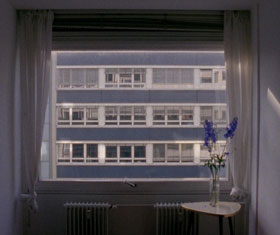

21,3°C

Helena Wittmann – Germany 2014 – 16 Min.
E: Helena Wittmann
With Luise Donschen
16mm – German
HFBK-Filmpreis der Kulturbehörde Hamburg 2014
The image of a room, its appearance changing with the shades of light. A window front, seen through the window. Changing flower arrangements on a side table. Sounds, entering the room from outside the frame. A construction site hints at changes in the exterior. Rehearsals. Are the sound waves of the piano reaching us from downstairs or from next door? In 21.3°C Helena Wittmann reduces the filmic elements to the essentials: light, shadow, sound, direction. Out of this minimum, stories emerge that linger, atmospheres that resonate. Little by little the viewer is thrown back upon herself/himself. Through the facing window front someone seems to look back at us. Only the temperature remains the same. – Helena Wittmann
Monday 13/10 8:30 p.m. Werkstattkino
Helena Wittmann, born in 1982 in Neuss, Germany. Studies of Fine Arts at Hamburg.
Films: Heute war die Luft 2009 – Mimikry 2009 – Kreisen 2011 – Wildnis 2013 – 21,3°C 2014